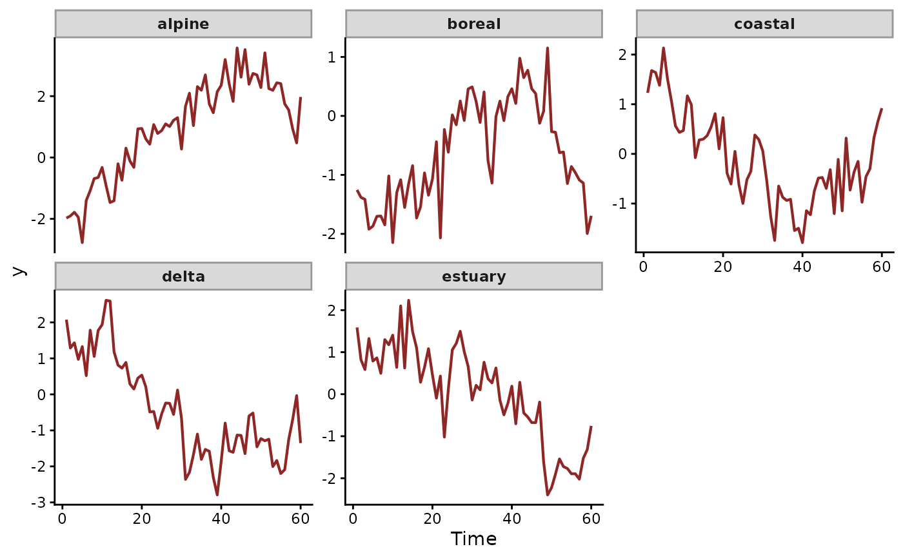

Simulated lake chemistry with correlated random-walk state
Source:R/lake_chemistry.R
lake_chemistry.RdA state-space dataset for five lakes observed monthly across 60 months. The latent process is a correlated random walk across lakes (two regional clusters share positive innovation correlation, a fifth lake is independent). The observation equation adds a binary treatment indicator that switches on at month 31, with heterogeneous slopes across lakes: two lakes respond positively and three respond negatively.
Format
A data.frame with 300 rows and the following fields:
- series
factor identifying the lake (
alpine,boreal,coastal,delta,estuary); duplicated aslake.- time
integer month index from 1 to 60.
- y
numeric chemistry measurement (Gaussian); duplicated as
chemistry.- lake
factor, alias of
series.- month
integer month index, alias of
time.- treated
integer (0/1) treatment indicator; switches on from month 31 onwards in all lakes.
- chemistry
numeric chemistry measurement, alias of
y.
Details
A pooled fit with one treatment slope for all lakes reports an
effect near zero with a wide credible interval. The positive and
negative responses cancel. A state-space fit
(trend_formula = ~ RW(cor = TRUE)) with a treatment slope for each
lake recovers the response of every lake.
True generative components:
Per-lake intercepts (centred).
Latent random walk with cross-lake innovation correlation
0.6between(alpine, boreal)and(coastal, delta), independent forestuary. Innovation standard deviation0.25.Heterogeneous treatment slopes:
(alpine = +0.8, boreal = +0.6, coastal = -0.5, delta = -0.7, estuary = -0.6).Observation noise
sigma = 0.4.
See also
RW() for the trend, residual_cor() to extract the fitted
correlations between lakes, ranef.mvgam() for the lake slopes,
mvgam_data() to check the data.
Examples
data(lake_chemistry)
mvgam_data(lake_chemistry, family = gaussian())
#> ✔ Data check passed for family 'gaussian (link = identity)'.
#> • series: 5 levels
#> • time: 1 to 60
#> • n obs: 300 (0 NA)

# \dontrun{
# A model with the structure the data were simulated from
mod <- mvgam(
formula = y ~ treated + (treated || lake),
trend_formula = ~ RW(cor = TRUE),
data = lake_chemistry,
family = gaussian(),
chains = 2, silent = 2
)
summary(mod)
#> Family: gaussian
#> Links: mu = identity; sigma = log
#> Formula: y ~ treated + (treated || lake)
#> Data: lake_chemistry (Number of observations: 300)
#> Series: 5
#> Trends: RW
#> Draws: 2 chains, each with iter = 2000; warmup = 1000; thin = 1;
#> total post-warmup draws = 2000
#>
#> == Observation Model ==
#> Multilevel Hyperparameters:
#> ~lake (Number of levels: 5)
#> Estimate Est.Error l-95% CI u-95% CI Rhat Bulk_ESS Tail_ESS
#> sd(Intercept) 1.99 0.80 0.95 3.89 1.00 1007 1372
#> sd(treated) 1.09 0.69 0.09 2.83 1.00 421 266
#>
#> Regression Coefficients:
#> Estimate Est.Error l-95% CI u-95% CI Rhat Bulk_ESS Tail_ESS
#> Intercept 0.18 0.87 -1.56 1.90 1.00 671 999
#> treated -0.37 0.64 -1.67 0.87 1.00 753 772
#>
#> Further Distributional Parameters:
#> Estimate Est.Error l-95% CI u-95% CI Rhat Bulk_ESS Tail_ESS
#> sigma 0.41 0.03 0.35 0.46 1.01 364 689
#>
#> == Trend Model ==
#> Trend Specific Parameters:
#> Estimate Est.Error l-95% CI u-95% CI Rhat Bulk_ESS
#> sigma_trend[alpine] 0.34 0.08 0.21 0.50 1.00 519
#> sigma_trend[boreal] 0.26 0.06 0.17 0.39 1.00 937
#> sigma_trend[coastal] 0.24 0.06 0.14 0.37 1.00 699
#> sigma_trend[delta] 0.35 0.07 0.22 0.51 1.00 668
#> sigma_trend[estuary] 0.34 0.07 0.21 0.51 1.00 883
#> Tail_ESS
#> sigma_trend[alpine] 993
#> sigma_trend[boreal] 1383
#> sigma_trend[coastal] 1297
#> sigma_trend[delta] 1142
#> sigma_trend[estuary] 1172
#>
#> Draws were sampled using sampling(NUTS). For each parameter, Bulk_ESS
#> and Tail_ESS are effective sample size measures, and Rhat is the potential
#> scale reduction factor on split chains (at convergence, Rhat = 1).
#>
#> Next steps:
#> - `pp_check(fit)`: posterior predictive checks
#> - `residual_cor(fit)`: implied cross-series correlations
#> - `forecast(fit, newdata = ...)`: out-of-sample forecasts
#> - `lfo_cv(fit)`: leave-future-out model comparison
#> - `conditional_effects(fit)`: covariate effects
#> Use `how_to_cite(fit)` for a methods paragraph and `methods_md(fit)` for its equations.
# }